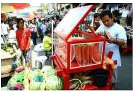
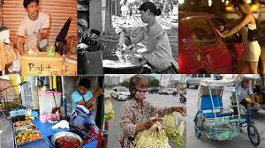

Listen to music while reading ^^

Ano ang impormal na sektor?
IMPORMAL NA SEKTOR
Sektor ng ekonomiya na walang pormal o salat sa mga dokumentong kailangan sa pagsasagawa ng gawaing pang-ekonomiya
Ang kita ng sektor na ito ay HINDI naisasama sa kabuuang Gross Domestic Product (GDP) ng bansa
Paraan ng mamamayan upang magkaroon ng kabuhayan/dagdag kita sa tuwing panahon ng pangangailangan
Ito ay nagdudulot rin ng pagkakalikha ng mga produkto at serbisyong tutugon sa ating mga pangangailangan
Kilala rin sa tawag na Underground Economy
HALIMBAWA NG MGA TAONG KABILANG SA SEKTOR NA ITO
Nagtitinda sa kalsada
Pedicab driver
Karpintero
Hindi rehistradong pampublikong sasakyan
KATANGIAN NG IMPORMAL NA SEKTOR
Hindi nakarehistro sa pamahalaan
Hindi nagbabayad ng buwis mula sa kinita
Walang legal at pormal na balangkas mula sa pamahalaan para sa pagnenegosyo
IBA’T IBANG ANYO NG IMPORMAL
NA SEKTOR
Mga gawaing maaaring isakatuparan lamang sa loob ng tahanan
Mga gawaing pansibiko, pagkakawanggawa, at panrelihiyon
Mga sari-sari stores, pagtitinda sa labas ng bahay o sidewalk, paglalako ng kalakal o serbisyo
Ilegal na gawain tulad ng pagnanakaw, pagbebenta ng ilegal na gamot, piracy, at prostitusyon
KAHALAGAHAN NG IMPORMAL NA SEKTOR
Sinasalo nito ang mga mamamayan na hindi makapasok bilang mga regular na empleyado sa isang kompanya.
Nagbibigay ng pagkakataon sa maraming Pilipino na makapaghanapbuhay
Nagsisilbing tagasalo ng mga mamamayang may mahigpit na pangangailangan
Malaki ang naitutulong sa mga konsyumer ang mga kalakal at serbisyong mula sa impormal na sektor dahil sa MURA nitong halaga
DAHILAN KUNG BAKIT PUMAPASOK SA IMPORMAL NA SEKTOR ANG MGA MAMAMAYAN
Makaligtas sa pagbabayad ng buwis sa pamahalaan
Makaiwas sa masyadong mahaba at masalimuot na proseso ng pakikipagtransaksyon sa pamahalaan (bureaucratic red tape)
Kawalan ng regulasyon mula sa pamahalaan na kung saan ang mga batas at programa ay hindi naitutupad nang maayos
Makapaghanapbuhay nang hindi nangangailangan ng malaking kapital o puhunan
Malabanan ang matinding kahirapan
EPEKTO SA EKONOMIYA NG IMPORMAL NA SEKTOR
Pagbaba ng halaga ng nalilikom na buwis
Banta sa kapakanan ng mga mamimili
Paglaganap ng mga ilegal na gawain

Ano-ano ang mga batas?
MGA BATAS, PROGRAMA, AT PATAKARANG PANG-EKONOMIYA SA IMPORMAL NA SEKTOR
Social Reform and Poverty Alleviation Act of 1997 (R.A 8425)
Iahon sa kahirapan ang mga Pilipinong kabilang sa impormal na sektor
Upang maisakatuparan ang mga probisyon ng batas na ito ay itinatag ang National Anti-Poverty Commission
Magna Carta of Women (R.A 9710)
Inaalis ang lahat ng uri ng diskriminasyon laban sa kababaihan
Philippine Labor Code (P.D 442)
Pangunahing batas ng bansa para sa mga manggagawa na itinatag noong Mayo 1, 1974
Technical Education and Skills Development Act of 1994 (R.A 7796)
Layuning palakasin ang pakikiisa ng iba't ibang sektor upang mapabuti ang kasanayan at kalidad ng yamang tao sa bansa
Social Security Act of 1997 (R.A 8282)
Nagtatakda ng tungkulin ng estado na paunlarin at pangalagaan ang seguridad at kagalingang panlipunan ng mga manggagawa
National Health Insurance Act of 1995 (R.A 7875)
Nagtatag ng Philippine Health Insurance Corporation (PhilHealth) upang matiyak na may maayos at sistematikong kaseguruhang pangkalusugan ang lahat ng Pilipino
MGA PROGRAMA PARA SA MAMAMAYAN
Dole Integrated Livelihood Program (DILP)
Nagbibigay ng pagsasanay at tulong pangkabuhayan para sa sariling hanapbuhay
Self-Employment Assistance Kaunlaran Program (SEA-K)
Tumutulong sa mahihirap na pamilya sa pagsasanay at pagsisimula ng negosyo
Integrated Services for Livelihood Advancement of the Fisherfolks (ISLA)
Nagbibigay ng suporta sa pamamagitan ng pagsasanay at pagkakaloob ng kagamitan upang mapaunlad ang kanilang hanapbuhay
Cash-For-Work Program (CWP)
Pansamantalang kita para sa nasalanta, kapalit ng trabahong pang-rehabilitasyon
Pantawid Pamilyang Pilipino Program (4Ps)
Tulong-pinansyal sa pinakamahihirap na Pilipino kapalit ng pagsunod sa mga kondisyong pangkalusugan at pang-edukasyon ng kanilang mga anak